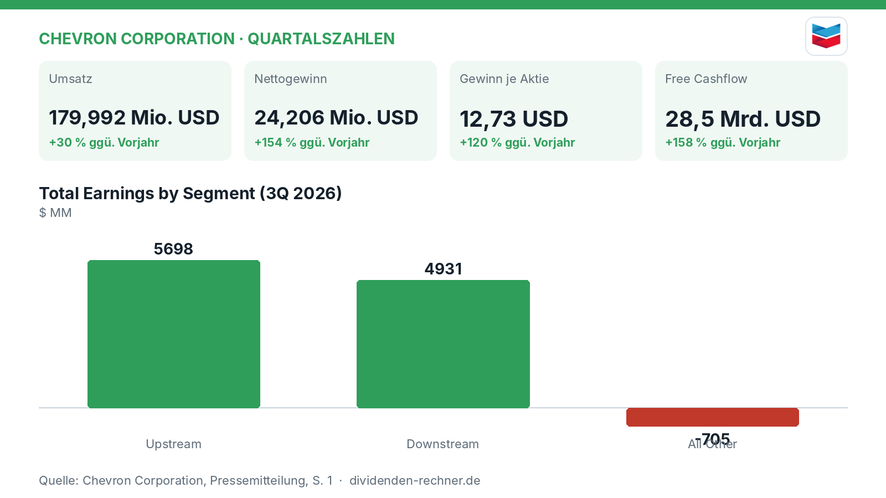

Quartalszahlen

Chevron steigert Gewinn auf 24,2 Milliarden Dollar im Neunmonatszeitraum
Chevron verzeichnet im dritten Quartal 2026 einen massiven Gewinnsprung. Der US-Ölkonzern profitiert von starker Produktion und Rekorden in der Raffinerie.
Kurz gesagt
Umsatz: 180,0 Mrd. USD (+30 %)
Gewinn: 24,2 Mrd. USD (+154 %)
- Zahlen: Der Nettogewinn im Neunmonatszeitraum sprang deutlich nach oben, während auch der Umsatz kräftig zulegte.
- Ursache: Höhere Margen im Raffineriegeschäft, starke Ölpreise und Rekordmengen bei der Verarbeitung trieben das Ergebnis.
- Risiko: Unwägbarkeiten durch geopolitische Konflikte im Nahen Osten und schwankende Rohölnotierungen belasten die Aussichten.
Ölkonzern Chevron zieht nach neun Monaten starke Zwischenbilanz
Chevron hat im dritten Quartal 2026 von einer robusten operativen Verfassung und einem verbesserten Preisumfeld profitiert. Der US-Energieriese steigerte den Umsatz in den ersten neun Monaten des Jahres auf rund 180,0 Mrd. USD, was einem Zuwachs von 30 Prozent gegenüber dem Vorjahreszeitraum entspricht. Noch deutlicher fiel der Anstieg beim Nettogewinn aus, der sich auf 24,2 Mrd. USD mehr als verdoppelte. Die bereinigten Ergebnisse zeigen ebenfalls eine deutliche Erholung der Profitabilität im Vergleich zum Vorjahr.

Eigene Darstellung nach Daten aus: Chevron Corporation, Quartalszahlen vom 2026-10-30 · Original.Starkes Raffineriegeschäft und hohe Upstream-Produktion
Im Heimatmarkt USA und international liefen die Anlagen auf Hochtouren. Die Raffinerien verarbeiteten Rekordmengen an Rohöl, was zu einer starken Auslastung und besseren Margen bei Produkten wie Benzin und Diesel führte. Im Fördergeschäft (Upstream) überstieg die US-Produktion im fünften Quartal in Folge die Marke von zwei Millionen Barrel Öläquivalent pro Tag, getragen von Fortschritten im Golf von Mexiko. Ungeachtet dieser operativen Fortschritte dämpften Belastungen durch Rechtsrückstellungen und steuerliche Effekte das Ergebnis in einigen internationalen Regionen.
„Wir haben starke operative Leistungen gezeigt und diszipliniert gearbeitet, während wir weiter in das Angebot an Energie investieren.“
— Mike Wirth, Vorstandschef von Chevron (aus dem Englischen übersetzt)
Solide Dividendenzahlungen trotz volatiler Märkte
Die Aktionäre werden weiterhin verlässlich am Erfolg beteiligt. Der Vorstand beschloss eine Quartalsdividende von 1,78 USD je Aktie. Die Ausschüttung wird durch einen deutlich gestiegenen Free Cashflow unterstützt, der im Berichtszeitraum bei 28,5 Mrd. USD lag und damit die Kennzahlen des Vorjahres weit hinter sich ließ. Das Unternehmen setzt damit auf eine verlässliche Rückführung von Barmitteln an die Eigentümer, gestützt durch konstante Dividendenzahlungen und Aktienrückkäufe.
Schuldensenkung und stabiler Cashflow
Die Bilanzstruktur des Konzerns verbesserte sich im Jahresverlauf spürbar. Durch den hohen operativen Cashflow und Zuflüsse aus Vermögensverkäufen konnte Chevron die Gesamtverschuldung weiter zurückführen. Die Nettoverschuldung sank im Laufe des Jahres deutlich, wodurch sich der Verschuldungsgrad im Verhältnis zum Cashflow verringerte. Die Investitionen (Capex) wurden im Vergleich zum Vorjahreszeitraum leicht angepasst und flossen primär in wachstumsträchtige Regionen wie den Permian-Basin und internationale Erschließungsprojekte.
Bewertung im Branchenvergleich
Mit einer Dividendenrendite im marktüblichen Rahmen und einer soliden operativen Marge präsentiert sich das Unternehmen finanziell gefestigt. Das Kurs-Gewinn-Verhältnis (KGV) spiegelt die zyklische Natur des Rohstoffsektors wider, bleibt jedoch in einem moderaten Bereich. Die historische Tendenz des Konzerns, Dividendenerhöhungen verlässlich im Jahresrhythmus umzusetzen, bleibt für langfristige Anleger ein wichtiger Anker, auch wenn das Geschäft stark von den globalen Energiepreisen abhängt.
Ausblick und geopolitische Risiken
Für die kommenden Monate bleibt das Management zuversichtlich, mahnt jedoch zur Vorsicht angesichts anhaltender geopolitischer Spannungen im Nahen Osten und regulatorischer Hürden. Investitionen in neue Projekte wie in Venezuela sollen langfristig günstige und langlebige Förderkapazitäten sichern. Gleichzeitig bleibt das Unternehmen anfällig für Preisschwankungen am Weltmarkt sowie unvorhergesehene Lieferkettenstörungen.
Die wichtigsten Zahlen im Überblick
| Kennzahl | Wert | Veränderung zum Vorjahr | Quelle |
|---|---|---|---|
| Umsatz | 179,992 Mio. USD | +30 % | S. 9 |
| Nettogewinn | 24,206 Mio. USD | +154 % | S. 1 |
| Gewinn je Aktie | 12,73 USD | +120 % | S. 1 |
| Free Cashflow | 28,5 Mrd. USD | +158 % | S. 3 |
| Dividende je Aktie | 1,78 USD | – | S. 3 |
Quelle: Chevron Corporation, Quartalszahlen vom 2026-10-30. Rechenwege eigene Berechnung. Keine Anlageberatung.
Hinweis: Dieser Text dient der allgemeinen Information und ist weder Anlage-, Steuer- noch Rechtsberatung. Kapitalanlagen sind mit Risiken verbunden, bis hin zum Totalverlust.